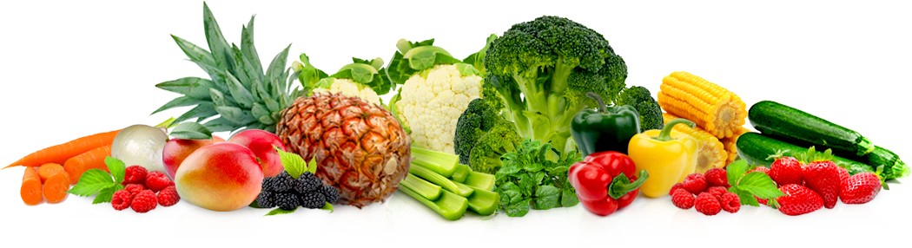

<!-- Cabeçalho principal com introdução e imagem -->
<section class="introduction">
  <div class="introduction-inner-content">
    <div class="introduction-bottom-side">
      <aside class="introduction-bottom-side-left">
        <h2>Bem-vindo à FoodMania!</h2>
        <p>
          FoodMania é o seu portal para descobrir de forma fácil e divertida as
          principais informações nutricionais dos alimentos de acordo com a
          tabela
          <a
            class="taco-link"
            target="_blank"
            href="https://www.cfn.org.br/wp-content/uploads/2017/03/taco_4_edicao_ampliada_e_revisada.pdf"
            >TACO</a
          >.
        </p>
        <a href="#" class="button">Saiba mais &#8594;</a>
      </aside>
      <aside class="introduction-bottom-side-right">
        
      </aside>
    </div>
  </div>
</section>
